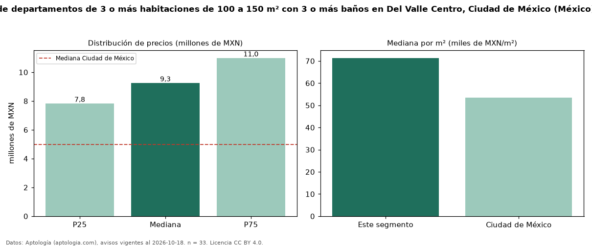

Precio de venta de departamentos de 3 o más habitaciones de 100 a 150 m² con 3 o más baños en Del Valle Centro, Ciudad de México (México) — octubre 2026
En Del Valle Centro, Ciudad de México (México), la mediana de precio de venta de departamentos de 3 o más habitaciones de 100 a 150 m² con 3 o más baños es MXN 9,26 millones, según 33 avisos vigentes. Eso es 13 % más que la mediana de los departamentos de 3 o más habitaciones de 100 a 150 m² en venta de Del Valle Centro (MXN 8,22 millones, n = 99); este segmento reúne el 33 % de esos avisos. Por metro cuadrado, la mediana es MXN 71.353/m² (n = 31), 7 % por encima de los departamentos de 3 o más habitaciones de 100 a 150 m² en venta de Del Valle Centro (MXN 66.760/m²). El área mediana anunciada es 133 m². La mediana de todos los departamentos en venta de Ciudad de México es MXN 4,99 millones (+86 % de diferencia). La mitad central de los avisos va de MXN 7,83 millones a MXN 10,99 millones (razón 1,4), una dispersión moderada. Datos: Aptología (aptologia.com), CC BY 4.0 — https://www.aptologia.com/. Archivos: PDF, CSV con las cifras y gráfica PNG.

| Avisos únicos | 33 |
|---|---|
| Percentil 25 | COP 7.834.500 |
| Mediana | COP 9.259.125 |
| Percentil 75 | COP 10.990.000 |
| Mediana por m² | COP 71.353 |
Fuente: avisos vigentes de portales inmobiliarios recopilados por Aptología, deduplicados (mínimo 30 avisos únicos por celda). Precios pedidos, no cerrados. Fecha: 2026-10-18.